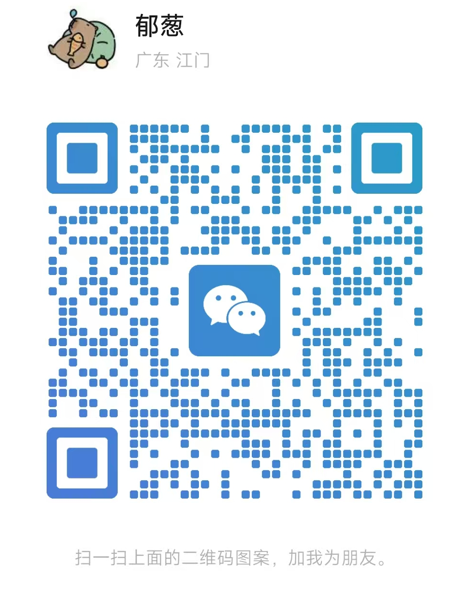

个人简介
我是张誉聪，英文名 Albert Lush，目前就读于华南师范大学服装与服饰设计专业。作品方向集中在服装设计、非遗文化视觉转译、视觉系统与商业文档排版。我重视从调研、概念到版式和最终交付的完整过程，也会使用数字工具提高迭代效率。
服装设计 · 非遗文创 · 视觉叙事
RESEARCH / DESIGN / DELIVERY
RESUME / PROFILE
我是张誉聪，英文名 Albert Lush，目前就读于华南师范大学服装与服饰设计专业。作品方向集中在服装设计、非遗文化视觉转译、视觉系统与商业文档排版。我重视从调研、概念到版式和最终交付的完整过程，也会使用数字工具提高迭代效率。
参与汕尾长沙湾非遗文化调研，提炼纹样、色彩与地方符号，完成视觉识别、包装设计与展示物料。项目获绚丽年华第十八届全国美育教学成果展学生作品二等奖（国家级）。
围绕汕尾非遗元素进行数字化转译，使用 Stable Diffusion、即梦 AI 生成多方向服装样稿并筛选迭代，形成“调研-生成-筛选-展示”的 AI 设计流程。
曾以淘宝接单方式完成 PPT 设计与文档排版项目，重点处理封面视觉、章节结构、页面节奏、信息层级和图文关系，让汇报材料更适合展示与交付。
协助学院完成行政资料整理、信息提取、PPT 演示文稿、Word 文档与 Excel 表格制作，使用 Gemini/NotebookLM 建立信息整理流程。
CAREER EDGE / MULTIDISCIPLINARY DESIGNER
对团队而言，我的价值在于能迅速理解新方向，把调研、概念、视觉生成、版式、PPT 和网页展示串成可交付成果。不是单点执行，而是能把模糊想法推进成有视觉、有结构、有呈现的方案。
面对服装、非遗、品牌、PPT 和网页等不同任务，我能快速拆解资料、建立方法、形成方向，再把学习结果转化成视觉作品和可展示材料。
能从调研与参考中筛选有效信息，并落实到色彩、版式、图像、服装语言和最终交付，而不是停留在概念描述。
我习惯从地方文化、服装趋势、品牌叙事和数字媒介之间找连接点，把元素转译成系列视觉、提案页面、服装风格和网页展示。
 Photoshop
Photoshop Illustrator
Illustrator Codex
Codex Claude
Claude Procreate
Procreate Gemini
Gemini Figma
Figma GitHub
GitHub 剪映
剪映UI SHOWCASE / CODED INTERFACE PROJECTS
PORTFOLIO SYSTEM / DARK GRID
AI WORKSPACE / LIGHT BENTO SYSTEM
HERITAGE MOBILE / EASTERN EDITORIAL UI
GLASS PORTFOLIO / INTERACTIVE LANDING UI
MOTION DESIGN / HYPERFRAMES
CASE STUDY PREVIEW / CLICK TO VIEW
PPT / CLIENT PRESENTATION DESIGN
ALL IMAGES
AWARDS / DESIGN
绚丽年华第十八届全国美育教学成果展学生作品二等奖（国家级）
三等奖
